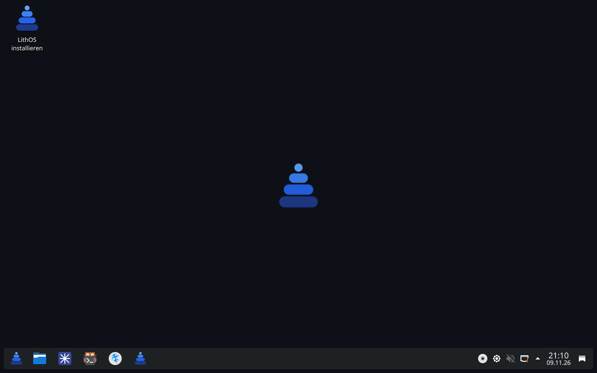

LithOS
Linux auf Basis von Arch, mit KDE Plasma. Vom USB-Stick starten, ausprobieren, später fest installieren.

Was drin ist
Version 1.0 ist eine Vorschau: Das Live-System läuft, der Installer und die Willkommens-App folgen.
| Bereich | Was LithOS nutzt | Stand |
|---|---|---|
| Basis | Arch Linux, Rolling Release | in 1.0 |
| Desktop | KDE Plasma 6, Taskleiste unten, dunkles Design | in 1.0 |
| Kernel | linux-cachyos, später der eigene linux-lithos | in 1.0 |
| Start | GRUB mit Deutsch und Englisch, Bootlogo mit Plymouth | in 1.0 |
| Grafik | Treiber für Nvidia, AMD und Intel automatisch | geplant |
| Installer | „Install LithOS“ auf dem Desktop, btrfs mit Snapshots, optional verschlüsselt | geplant |
| Willkommens-App | Spiele, Programmieren, Office, Wine per Häkchen | geplant |
| Pakete | Arch, AUR, Flathub | geplant |
| Programme | Helium (Browser), Kitty (Terminal), fish (Shell) | geplant |
| Updates | Meldung bei neuen Updates, installiert wird nur nach Bestätigung | geplant |
Download
LithOS Live-ISO
x86_64 · UEFI und BIOS · KDE Plasma
Alle Versionen stehen unter GitHub Releases.
SHA256
Live-System starten
- ISO auf einen USB-Stick schreiben, zum Beispiel mit Ventoy oder balenaEtcher.
- Rechner vom Stick starten und im Bootmenü Deutsch oder Englisch wählen.
- Das Live-System meldet sich selbst an. Auf der Festplatte wird nichts verändert.
Unter Linux geht es auch ohne Zusatzprogramm (sdX durch den Stick ersetzen):
sudo dd if=LithOS-1.0-Granit-live-x86_64.iso of=/dev/sdX bs=4M status=progress oflag=sync
Download prüfen: sha256sum -c LithOS-1.0-Granit-live-x86_64.iso.sha256
Fragen
Kostet LithOS etwas?
Nein. Der Quellcode des ISO-Profils liegt offen auf GitHub im Branch lithos.
Kann ich LithOS schon installieren?
Noch nicht. Version 1.0 ist ein Live-System zum Ausprobieren. Der Installer kommt mit der nächsten Version.
Läuft es in einer virtuellen Maschine?
Ja. Getestet wird mit QEMU/KVM. VirtualBox und VMware sollten ebenfalls gehen.
Wo melde ich Fehler?
Unter GitHub Issues.